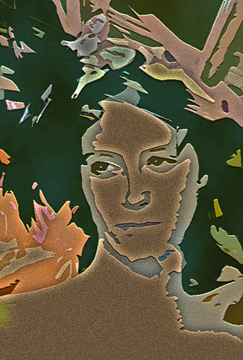

The Nudist Colony
by Tim Hawkins

In college, a few of us played, sporadically, at being
nudists, casual sophisticates who feigned indifference
to the body, until one late-summer’s deluge when we danced
and washed each others’ hair all over the rooftops.
But it was mostly a pose, lacking conviction, lacking
the exuberance of, say, junior high, where nudity was more
of a dare, a giddiness resolved by leaping from midnight
railroad trestles and running through graveyards, convulsed with laughter.
I often omit the next part, a prolonged, disturbed post-graduate
phase fueled by loneliness and bourbon, but as long as
I am exposing myself I do recall tracking something,
naked, through acre after acre of dark forest, and daring myself
to risk the ultimate road rash on a motorcycle trip
across state lines. Then there was the unforgettable night
I floated nude for hours down a heron-strewn river and
had to hike back for my clothes along a busy stretch of road.
Nowadays, home is where I let my Buddha’s stomach
tumble out of its belt, and feel my slack skin sag,
while my baby girl turns somersaults and pirouettes proudly
in the altogether, and my wife rubs her pregnant belly and
beams in the here and now, as we settle in for the evening,
at home at last in our skins.
 |